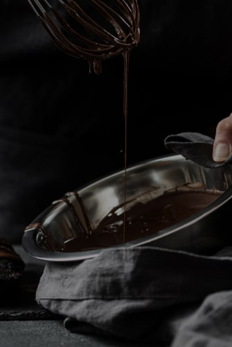

<section id="howitsmade" class="how-its-made">
    <div class="container">
        <h1 class="title-howitsmade">HOW IT'S <span>MADE?</span></h1>
        <div class="wrapper-howitsmade">
            <div class="videoframe">
                <picture>
                    <source
                    media="(min-width: 1200px)"
                    srcset="
                        ../img/desktop/video-image.jpg   1x,
                        ../img/desktop/2x/video-image@2x.jpg 2x
                    "
                    />
                    <source
                    media="(min-width: 768px)"
                    srcset="
                    ../img/tablet/video-image.jpg   1x,
                    ../img/tablet/2x/video-image@2x.jpg 2x
                    "
                    />
                    <source
                    media="(max-width: 767px)"
                    srcset="
                    ../img/mobile/video-image.jpg   1x,
                    ../img/mobile/2x/video-image@2x.jpg 2x
                    "
                    />
                    
                </picture>
            </div>
            <div class="recepie-howitsmade">        
                <h2 class="subtitle-recepie">Try  our chocolates today and discover the perfect balance of flavor</h2> 
                <ul class="recepie-list">
                    <li class="recepie-step">Heat the milk in a saucepan without bringing it to a boil. Add sugar and cocoa powder.</li>
                    <li class="recepie-step">At the same time, prepare a water bath. Melt the butter on it.</li>
                    <li class="recepie-step">"Mix" the milk mixture and already liquid butter. Mix thoroughly with a silicone spatula so that the mass becomes uniform and silky.</li>
                    <li class="recepie-step">Heat the mixture over low heat, letting it barely boil.</li>
                    <li class="recepie-step">Pour the chocolate into special containers (can be replaced with ice molds). Allow to cool and harden.</li>
                </ul>
            </div>
        </div>
    </div>
</section>
